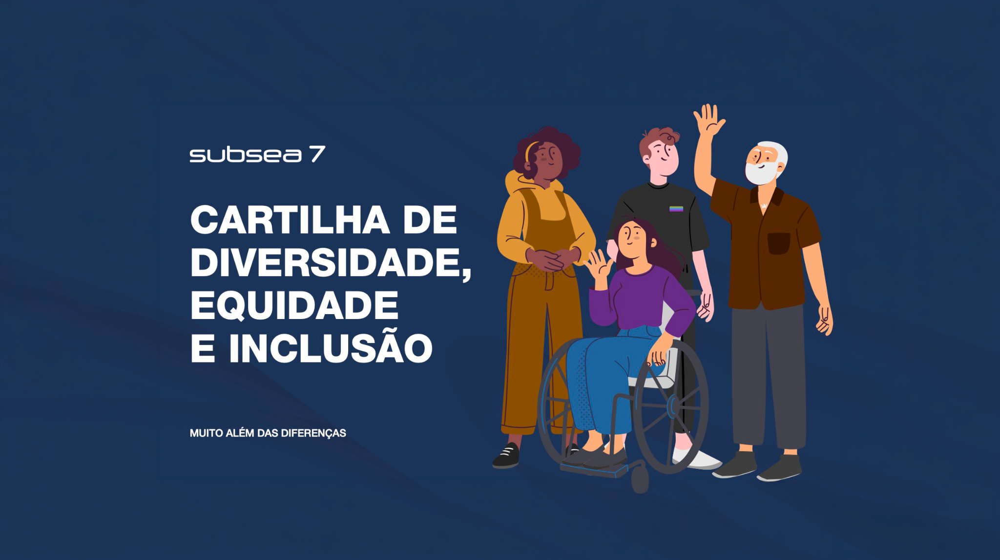
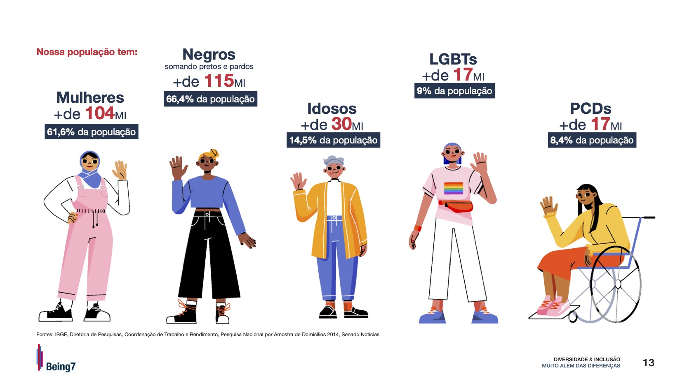
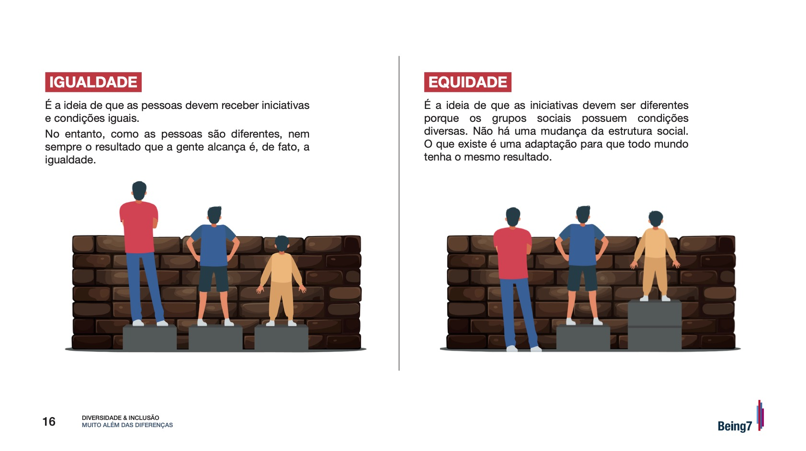

Clareza
Hierarquia visual para transformar informação densa em uma leitura direta e orientada.
01 — Subsea7

Contexto
Esta cartilha foi integralmente diagramada e desenvolvida por mim como parte das iniciativas de Comunicação Interna da Subsea7.
O desafio foi transformar conteúdos técnicos e institucionais em um material visualmente acessível, organizado e alinhado à identidade da empresa.
Objetivo
O projeto teve como objetivo fortalecer a disseminação de práticas e conceitos relacionados à diversidade, equidade e inclusão por meio de uma comunicação clara e de fácil compreensão.
A estrutura editorial precisava organizar diferentes tipos de informação — conceitos, dados, exemplos e ilustrações — mantendo uma experiência de leitura consistente do início ao fim.
Hierarquia visual para transformar informação densa em uma leitura direta e orientada.
Dados, conceitos e exemplos apresentados de forma visual para apoiar diferentes níveis de familiaridade com o tema.
Tipografia, cores, ilustrações e elementos gráficos organizados dentro da identidade corporativa.
Design editorial
A solução visual prioriza contraste, agrupamento e respiro para criar caminhos claros de leitura. Números ganham destaque quando precisam ser rapidamente assimilados; conceitos são separados em blocos comparativos; ilustrações ajudam a aproximar temas complexos do cotidiano.
O objetivo não era decorar o conteúdo, mas dar estrutura para que ele fosse entendido.


Minha atuação
Minha atuação envolveu a construção visual integral do material: organização das páginas, definição de hierarquias, composição, tratamento do conteúdo em blocos, integração entre texto e ilustração e preparação da cartilha dentro da linguagem institucional da Subsea7.
O projeto faz parte de um conjunto maior de iniciativas que desenvolvi em Comunicação Interna, em que o design funcionava como ferramenta para tornar mensagens corporativas mais claras, próximas e memoráveis.
Confidencialidade
Por se tratar de um material interno e confidencial, os direitos autorais e de uso pertencem à Subsea7. Por essa razão, o conteúdo completo da cartilha não pode ser divulgado publicamente. As páginas apresentadas aqui funcionam apenas como uma amostra do trabalho de design e diagramação.
Contato
Projeto, oportunidade profissional ou uma boa troca sobre design — escolha o canal que fizer mais sentido.